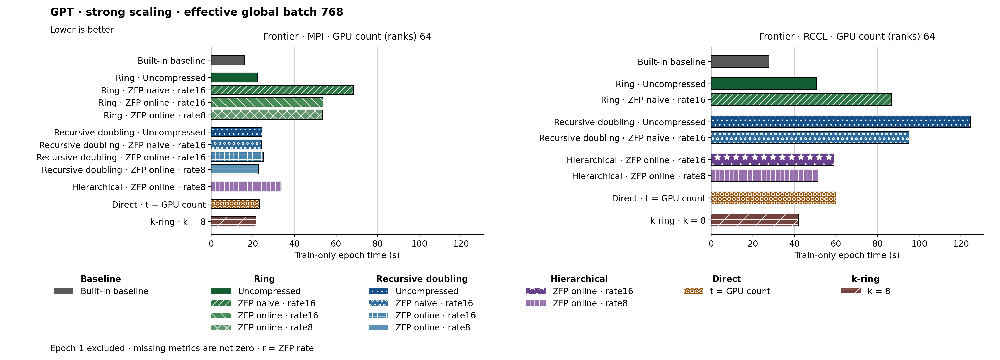

The figure uses hbar. Families and methods are identified by text and patterns in addition to color. The metric is Train-only epoch time (s). Frontier · MPI, GPU count (ranks) 64: Built-in baseline has the lowest plotted value, 16.170. Frontier · RCCL, GPU count (ranks) 64: Built-in baseline has the lowest plotted value, 27.790. Epoch 1 is excluded. Values are medians; when repeated runs are available the selected repeat policy is median. These are not confidence intervals across repeated jobs. Missing or unrecorded metrics are omitted, not set to zero.
| Panel | GPU count (ranks) | Method | Value | Runs |
|---|---|---|---|---|
| Frontier · MPI | 64 | none | 16.17 | 1 |
| Frontier · MPI | 64 | ring | 22.37 | 1 |
| Frontier · MPI | 64 | ring_zfp_naive:16 | 68.43 | 1 |
| Frontier · MPI | 64 | ring_zfp_online_coll:16 | 53.82 | 1 |
| Frontier · MPI | 64 | ring_zfp_online_coll:8 | 53.6 | 1 |
| Frontier · MPI | 64 | recursive_doubling | 24.47 | 1 |
| Frontier · MPI | 64 | recursive_doubling_zfp_naive:16 | 24.28 | 1 |
| Frontier · MPI | 64 | recursive_doubling_zfp_online_coll:16 | 25.07 | 1 |
| Frontier · MPI | 64 | recursive_doubling_zfp_online_coll:8 | 22.82 | 1 |
| Frontier · MPI | 64 | direct_p | 23.24 | 1 |
| Frontier · MPI | 64 | kring_k8 | 21.46 | 1 |
| Frontier · MPI | 64 | hierarchical_zfp_online_coll:8 | 33.62 | 1 |
| Frontier · RCCL | 64 | none | 27.79 | 1 |
| Frontier · RCCL | 64 | ring | 50.63 | 1 |
| Frontier · RCCL | 64 | ring_zfp_naive:16 | 86.59 | 1 |
| Frontier · RCCL | 64 | recursive_doubling | 124.56 | 1 |
| Frontier · RCCL | 64 | recursive_doubling_zfp_naive:16 | 95.17 | 1 |
| Frontier · RCCL | 64 | hierarchical_zfp_online_coll:8 | 51.32 | 1 |
| Frontier · RCCL | 64 | hierarchical_zfp_online_coll:16 | 58.95 | 1 |
| Frontier · RCCL | 64 | direct_p | 59.93 | 1 |
| Frontier · RCCL | 64 | kring_k8 | 41.95 | 1 |